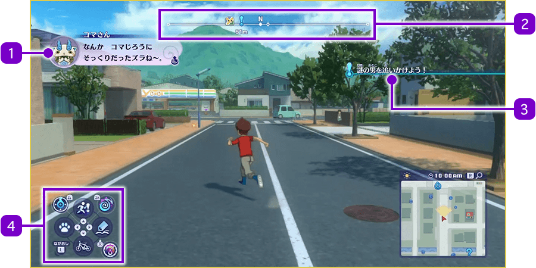
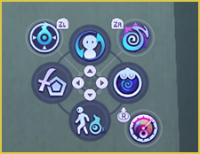
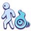
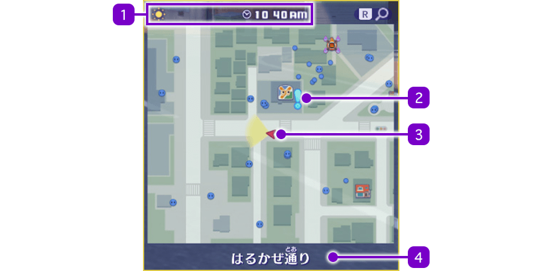

Pantalla de la zona
Zona abierta
Controla a Nathan y a los demás personajes para visitar distintos lugares.

- 1Diálogos
-
Se muestran cuando Nathan y los demás personajes, o las personas de la ciudad, están hablando. Los diálogos avanzan automáticamente, pero también puedes avanzar el texto pulsando el stick izquierdo.
- 2Brújula
-
Las direcciones este (E), oeste (O), sur (S) y norte (N) se indican mediante sus respectivas letras. La dirección del siguiente destino se marca con un "!", y debajo se muestra la distancia hasta el destino. Además, la posición de las instalaciones y otros lugares cercanos se muestra mediante iconos.
※ La forma de interpretar los iconos es básicamente la misma que en el mapa.
- 3Objetivo actual
-
Muestra el siguiente objetivo de la misión que estás haciendo. Cuando lo completas, aparece un ✔ en la casilla de la misión y se cambia al siguiente objetivo.
- 4Iconos del menú
-
Los controles asignados a la cruceta y otros botones se muestran mediante iconos.
Mientras presionas el botón correspondiente, el icono se ilumina.- Modo Reloj
(ZL) - Absorber Yo-ki
(ZR) - Navegación automática
(Cruceta arriba) - Subirte a / bajarte de la bicicleta
(Cruceta abajo) - Mostrar guía de Naviwoof
(Cruceta izquierda) - Abrir la aplicación Diario
(Cruceta derecha) - Activar el radar Yo-kai
(Pulsar stick derecho)
- Modo Reloj
Usar el menú de accesos directos
Mientras mantienes pulsado L, los cuatro iconos de controles correspondientes a los botones direccionales cambian a estos otros. Al pulsar cada botón direccional en este estado, puedes cambiar rápidamente de Watcher, Yo-kai acompañante, equipamiento / técnicas. Además, si seleccionas "Telespejo portátil", puedes utilizarlo para teletransportarte a otros lugares donde ya haya un Telespejo habilitado.

- Cambiar de Watcher
(+ Cruceta arriba) 
Cambiar Yo-kai acompañante
( + Cruceta abajo)- Cambiar equipamiento / técnicas
(+ Cruceta izquierda) - Telespejo portátil
(+ Cruceta derecha)
※ Los Yo-kai acompañantes son los Yo-kai que siguen al Watcher mientras este se desplaza por el mapa.
Minimapa
En el minimapa situado en la esquina inferior derecha de la pantalla de la zona abierta puedes comprobar lo que ocurre alrededor del personaje que estás controlando. Además, al pulsar el botón R, puedes ampliar o reducir el área que se muestra en el mapa.
※ La forma de interpretar los iconos es básicamente la misma que en el mapa.

- 1Clima y hora actual
- 2Destino actual
- 3Posición y dirección del jugador
- El personaje controlado se muestra mediante el icono correspondiente, y la dirección hacia la que está orientada actualmente la cámara aparece resaltada en amarillo.
- 4Nombre de la ubicación actual
- Se muestra cuando amplías el minimapa.